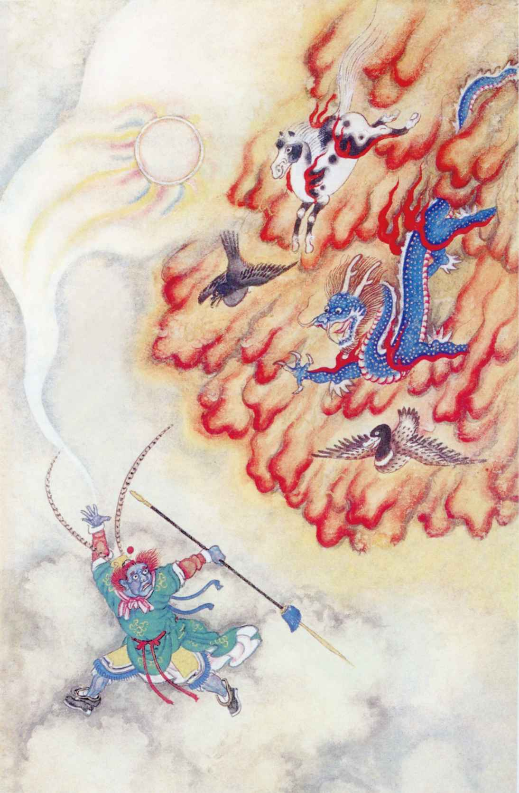

金山金洞
金山遇怪三十九难（50回）
孙悟空画圈保护唐僧，独自化斋，唐僧走出圈外，被妖怪捉住。
普天神难伏四十难（51回）
悟空找众神仙相救，兵器皆被套走。
问佛根源四十一难（52回）
如来提示悟空找到太上老君降魔，此怪原是老君坐骑青牛。
妖怪：独角兕大王（太上老君坐骑） 宝物：圈子（老君金刚琢）
出场神仙：托塔李天王 哪吒 雷公 火德星君 水德星君 十八罗汉
 山金洞山遇怪三十九难（50回）
山金洞山遇怪三十九难（50回）